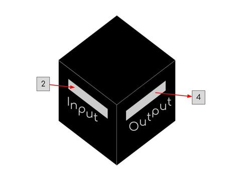
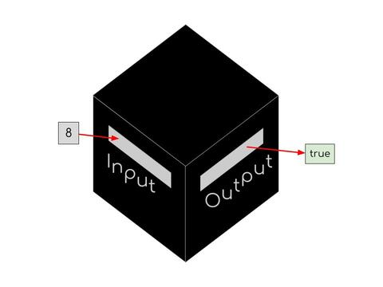
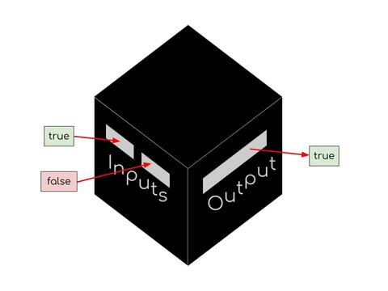
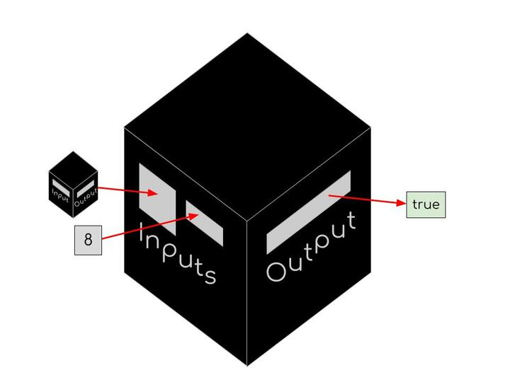
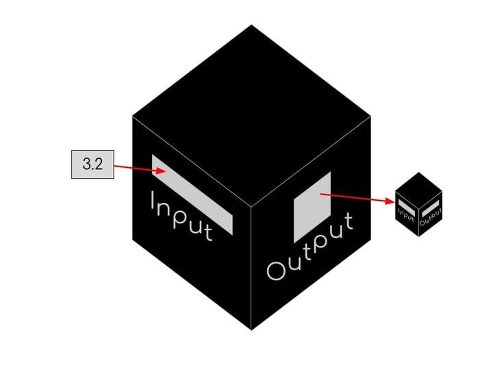
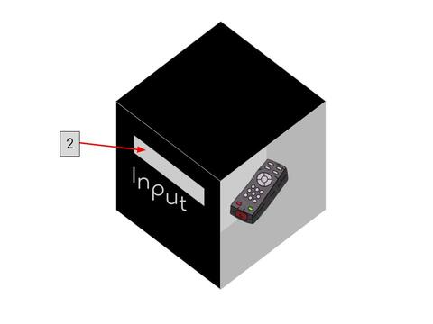
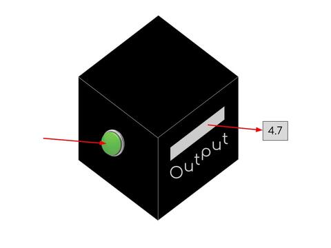
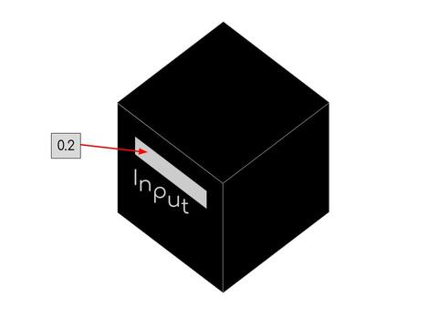
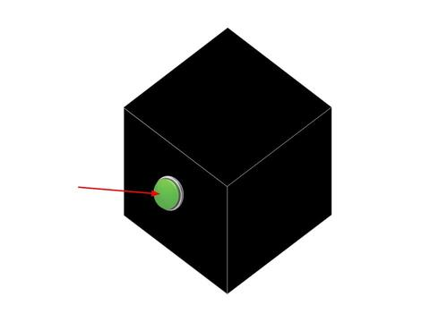

Programming 101
Introduction
Is this for me?
This tutorial has no prerequisites! It's written with the expectation that most of you have taken algebra 1, but if you haven't that shouldn't be a problem.
As for whether you should skip this tutorial, look at the topics listed in Goals. If you are comfortable with all of them (language doesn't matter) you can probably skip this. If you're comfortable with some but not all of the concepts, feel free to skip whatever you already know. If there's anything that you've learned already but you're not 100% sure you remember or have a good grasp on, you're highly encouraged to review it here.
Goals
Familiarity with the following topics:
- arithmetic, logical, and comparison operations:
- / + - *
- modulo (%)
- == > <
- and or not
- variables
- scope
- basic data types
- integers
- doubles
- booleans
- strings
- lists/arrays
- loops
- while loops
- for each loops
- functions
- if statements
Materials
All you need for this is a pen and paper.
I know many of you will read this, and then proceed to use your computers for everything anyway. But, for this tutorial, a computer will not help you. You will not be running any code. If you really want, you could write in a code block in google docs, but if possible, it is straightforwardly better in this case to be writing with your hand on paper or a tablet. You can write your code, any calculations you want to do, your thoughts, charts to work through loops, etc.
Best practices
As always, follow the general best practices.
One additional best practice for this tutorial:
Do all of the practice problems (unless you're confident that you know exactly how to do it and you think it's a waste of your time). Check your work. If you're ever not 100% sure that you did a problem right, ask someone to check for you.
Pseudocode
This tutorial uses pseudocode. In other words, instead of using a real language that you can run on a computer, we're going to be using a made up language.
The made up language is going to be very generic and simple. Much of the syntax will resemble Java, since that is the language that we use for robotics. (There will also be a strong resemblance to Python)
The nice thing about pseudocode, as opposed to code that you run on computers, is that if you don't use quite the right syntax or formatting, that's fine, as long as what you're trying to do is clear.
What is code?
To over-simplify, code is an input or set of instructions that a computer evaluates. For our purposes, that input is in the form of text.
Comments
Comments allow us to include commentary in our code, and let the computer know that we're writing text for people to read, not code for it to run. Generally, we use comments to add explanations about our code.
In this pseudocode language (and also in Java), you can comment lines out using //, so any line that starts with two slashes is a comment.
// this is a comment
Operations
One of the very simplest things that you can do with code is basic mathematical operations.
Arithmetic Operators
Arithmetic operations are probably the ones that you are most familiar with. They are used to manipulate numbers. These are the basic arithmetic operators:
| name | symbol | example |
|---|---|---|
| plus | + |
5 + 9 → 14 |
| minus | - |
8 - 4 → 4 |
| times | * |
8 * 2 → 16 |
| divided by | / |
20 / 4 → 5 |
| modulo | % |
5 % 2 → 1 |
Most of these should be self explanatory. The exception to that is the modulo operator.
Modulus
Modulus essentially means remainder. So a % b evaluates to the remainder when you divide $a$ by $b$.
Generally, modulus is done with non-negative integers only.
Let's look at what we get when we take every integer $n$ from $0$ to $10$, and calculate $n \space \% \space 2$:
| n | n % 2 |
|---|---|
| $0$ | $0$ |
| $1$ | $1$ |
| $2$ | $0$ |
| $3$ | $1$ |
| $4$ | $0$ |
| $5$ | $1$ |
| $6$ | $0$ |
| $7$ | $1$ |
| $8$ | $0$ |
| $9$ | $1$ |
A couple of things to note about this:
- The only two possible values for
n % 2are $0$ and $1$.- General conclusion: For all non-negative integers $n$ and $a$,
n % awill always evaluate to a non-negative integer between $0$ and $a$.
- General conclusion: For all non-negative integers $n$ and $a$,
- For all even values of $n$,
n % 2evaluates to $0$. For all odd values of $n$,n % 2evaluates to $1$.- General conclusion: Iff
n % aevaluates to $0$, then $n$ is divisible by $a$.
- General conclusion: Iff
Take a second to think about those properties until they really make sense.
Comparison Operators
Comparison operators compare values and return booleans. You should be familiar with most of these operations:
| name | symbol | example |
|---|---|---|
| equals | == |
5 == 5 → true |
| greater than | > |
8 > 8 → false |
| less than | < |
8 < 10 → true |
| greater than or equals | >= |
8 >= 8 → true |
| less than or equals | <= |
8 <= 5 → false |
| not equals | != |
5 != 5 → false |
| ## Logical Operators |
Logical operations transform booleans into other booleans (help). You should be very familiar with all of these words in english, but may not be used to using them in this context.
| operator | symbol | examples |
|---|---|---|
| and | && |
true && true → truetrue && false → falsefalse && false → false |
| or | || |
true \|\| true → truetrue \|\| false → truefalse \|\| false → false |
| not | ! |
!true → false!false → true |
| ## Practice problems |
Calculate what each of the following code expressions evaluates to (calculators allowed):
((10 + 4) - 8) % 2(11 < 11) || (23 % 2 == 1)(14 - 11) * 5 % 6(11 % 4 / 2 <= 1) && (17 % 2 != 0)
Variables
Variables in programming are a pretty similar concept to variables in math.
Essentially, a variable is a name attached to a value. Here's the basic syntax:
var name = value
So let's say we have the following line:
var x = 5
Now we have taken a value, $5$, and attached it to the name $x$.
if we were to use $x$ in an expression, it would evaluate to $5$. For example:
x + 2 → 7
Variables can have values that aren't numbers as well. For instance:
var y = true
!y → false
Functions
In math, functions are often defined as a mapping between inputs and outputs, where every input has a single output. To some extent, that definition works for functions in programming as well.
You can also think of a function like a black box. You feed it some input through a slot, and it spits something out of a slot on the other side. There's some mechanism inside of the box that converts from input to output.

Here's the general structure of a function definition:
def functionName(var input) {
// code
return output
}
Example: f
Let's take a simple function that you might see in math, and write it in this format. The function we're going to use is: $f(x) = 2x$
Okay so here's how we'd write that:
def f(var x) {
return 2.0 * x
}
So the name of this function is f, it's input is x, and its output is 2 * x.
Now that we have this function defined, we can call it on different values of x, or in other words, we can give the function an input and get an output. So, let's say we wanted to call f on the value $5$.3, here's what would happen:
f(5.3) → 10.6
Example: isEven
In the previous example, both the input and output to our function were numbers. For this example, the input is going to be an integer and the output will be a boolean!

More specifically, we're going to write a function that takes in an integer and returns whether or not that integer is even (or divisible by $2$).
def isEven(var n) {
return n % 2 == 0
}
Now, let's call our function on a few values and see what the output is:
isEven(4) → true
isEven(11) → false
isEven(0) → true
Example: xor
Generally, when we talk about or in math and programming, we mean and/or. In other words, or is true if at least one of the arguments passed to it is true. But there's also either/or (generally called xor), which is true if exactly one of the inputs is true. We're going to write an xor function, that will take two booleans as inputs and return whether exactly one is true.
This is the first time we're going to see that functions can have multiple inputs (this is true in math as well, although it may not be something you've run into yet). The black box analogy still works, the box just has multiple slots for inputs.

Here's xor:
def xor(var a, var b) {
return (a && (!b)) || (b && (!a))
}
Read through and try to understand the return statement. Essentially, xor returns true in two situations: a and !b are both true (a is true and b is false), or b and !a are both true (b is true and a is false). Let's look at a few examples:
xor(true, false) → true
xor(false, true) → true
xor(true, true) → false
xor(false, false) → false
Example: applyThrice
In some sense, a function is a value, just like a boolean or an integer. Which is to say, you can have a function whose input or output is another function!
If you want to go with the black box analogy, a function that takes another function as an input is like a black box with a slot where you feed in a different black box. And the mechanism inside the main black box might feed an input into the little black box, and then do something with the output.

A function that outputs another function, on the other hand, is like a big black box with a mechanism that builds another black box, and a slot to output that black box that it generates.

Here is a function that takes a function fun, and applies that function on the value v three times.
def applyThrice(var fun, var v) {
return fun(fun(fun(v)))
}
If applyThrice is a black box here's what it would look like:
- There would be two input slots:
- A square hole for a little black box (
fun) - A slot for a slip of paper (
v) with a value scribbled on it.
- A square hole for a little black box (
- On the inside of the black box:
- The little black box that (
fun), once fed through the slot, sits in the center of the big box, held in place - The slip of paper (
v), once fed in, is grasped by a little mechanical arm. Here's what the arm does:- It brings the paper (
v) to the little black box (fun), and feeds it intofunas an input. Out the output slot offuncomes another slip of paper with a new value written on it. The mechanical arm grabs the new slip of paper. - It takes the new slip of paper and moves it to the input side of
fun, and feeds it in through theinputslot (just like it did withv). A third slip of paper comes out of the output slot offunwith yet another new value, and the arm grabs it. - The arm feeds the third slip of paper to
funas an input! A final slip of paper comes out the output slot offun, and the mechanical arm grabs it. But this time, it just takes the paper and sends it out the output slot of the main big black box.
- It brings the paper (
- The little black box that (
And remember, all of this is happening inside the big black box. So from the perspective of someone using the function, all that happens is someone slides in a little black box and a slip of paper through the input slots of applyThrice, and then a different slip of paper comes out through the output slot. They don't see the mechanical arm at all.
Let's go through an example (f is a function that takes a number and multiplies it by $2$):
applyThrice(f, 2)
In this example, fun is f, and v is 2. So applyThrice will return f(f(f(2))).
f multiplies an input by 2, so f(2) is 4. And f(f(2)) is f(4) which is 8. And finally, f(f(f(2))) is f(8) which is 16.
So, ultimately, applyThrice(f, 2) → 16.
Practice Problems
- Write a function that takes as an input an integer
nand returns that integer modulo 4. - Write a function called
neitherthat takes in three inputs: a valuev, and two functionsfandg(both of which return booleans). Theneitherfunction should return whether bothfandgreturnfalsewhen called withvas an input.
Scope
The scope of a variable is the part of the code where that variable can be referenced. Generally, the scope of a variable v is from when it is defined, to the end of the code block within which it is defined.
Code blocks are usually denoted with curly braces. So, for instance, when you define a function, you have a pair of curly braces where the code for the function is written. That is a code block. (Other examples include loops and if statements).
When a function takes inputs, variables are defined for each input. The scope of those variables is only inside of the function:
// x is not defined yet
def foo(var x) {
// x is defined
}
// x is not in scope, and therefore not defined
In the code above, if you were to try to reference x outside of the function foo, you would get an error.
You could also create a new variable inside foo, and that variable would also go out of scope when the function ended:
// x and y are not defined yet
def foo(var x) {
// x is defined, y is not
var y = 3
// x and y are both defined and in scope
}
// x and y are not in scope, and therefore not defined
If, however, you defined a variable outside of foo, it would be in scope for the entire file!
// x, y, and z is not defined
var z = 8
// z is defined, x and y are not defined
def foo(var x) {
// x and z are is defined, y is not
var y = z + 2
// x, y, and z are defined and in scope
}
// z is in scope, x and y are not in scope
Now, let's say we made a new variable inside of foo, and called it z. This is called shadowing. You can create multiple variables with the same name, and have them in different scopes. When you try to refer to the name, you refer to the variable defined most recently. Here's an example:
// x and z are not defined
var z = 8
// z is defined as 8, x is not defined
def foo(var x) {
// x and z are is defined
var z = 7
// this z is shadowing the one we defined earlier
// if we refer to z here we will get 7
}
// only the original z remains
// if we refer to z we will get 8
Mutability
An important way that the variables we're talking about differ from mathematical variables, is that in most programming languages, variables are mutable, which is to say, they can be changed. Changing a variable looks similar to defining a variable, except that the word var is not used.
// x is undefined
var x = 0
// x is defined as 0
x = 3
// x is defined as 3
x = x + 2
// x is defined as 5
Be careful with mutability. Changing values can cause all sorts of bugs, so every time you find yourself mutating a value, think about whether it's necessary, and whether you're messing anything up.
Data Types
There are many different types of values, or formats for storing data.
Summary
| type | description | examples |
|---|---|---|
| integer | n/a | 1 |
| double | a number with a decimal point | 1.02.4 |
| boolean | see glossary | true |
| string | a collection of characters in quotation marks | "hello world""123*&@" |
| array | a collection of values that can be accessed by index | [5, 4, 3, 2, 1] |
| ## Arrays |
Simply put, arrays are ordered collections of values that can be accessed efficiently by index.
Note: in many languages (i.e. python) the data types called lists are arrays. Some languages, however, (i.e. scheme) have lists that are not arrays.
Here's an example of an array of integers:
[1, 2, 3, 4, 5]
Actually, let's assign this array to a variable:
var l = [1, 2, 3, 4, 5]
Now, if we wanted to extract a value from l, we could do so by using that value's index. And remember, we index starting from 0.
l[0] → 1
l[4] → 5
l[5] does not exist!
We can also have arrays with other types of values in them:
var stringArr = ["once", "upon", "a", "time"]
stringArr[1] → "upon"
Array Mutability
Like variables, values in arrays can be changed.
// l is undefined
var l = [1, 2, 3]
// l is defined as [1, 2, 3]
l[1] = -1
// l is defined as [1, -1, 3]
l[2] = l[1] * l[2]
// l is defined as [1, -1, -3]
Also like with variables, be careful when you mutate arrays.
Practice Problems
Here are some variables that will be used in the problems:
var boolArr = [true, false, false, true, false, true]
var intArr = [8, -4, 2, 9, -5, 3]
var doubleArr = [6.4, 2.0, 9.8787, 0.003]
Calculate what each of the following code expressions evaluates to:
boolArr[3] && boolArr[1]boolArr[5] && (boolArr[2] || (intArr[0] - intArr[2] + intArr[5] == 1))(intArr[4] * intArr[1]) % intArr[2]!(doubleArr[2] - doubleArr[3] < doubleArr[0])
Loops
Loops allow us to run the same code over and over again. We're going to learn about two different kinds of loops.
While Loops
With while loops, we can take a chunk of code and say that it should be run repeatedly, as long as some condition is true.
Here's the basic structure:
while (condition) {
// code to run
}
For each run of the loop, the computer will first check if the condition is true, and then if it is, it will run the code. Otherwise, the loop will end and the computer will move onto the code after the loop.
Example 1
Here's a simple example:
var x = 0
var sum = 0
// this code will run until x is greater than or equal to 4
while (x < 4) {
// first, we add the current value of x to our sum
sum = sum + x
// then, we increase x by 1
x = x + 1
}
After this loop runs, what is the value of sum?
Let's go through this step by step. For each run of the loop, we're going to look at the values of x and sum, figure out whether the condition is true, and then (if the condition is true) we'll see how x and sum change when we run the code inside the loop.
| sum | x | condition (x < 4) | next sum (sum + x) | next x (x + 1) |
|---|---|---|---|---|
| $0$ | $0$ | $true$ | $0$ | $1$ |
| $0$ | $1$ | $true$ | $1$ | $2$ |
| $1$ | $2$ | $true$ | $3$ | $3$ |
| $3$ | $3$ | $true$ | $6$ | $4$ |
| $6$ | $4$ | $false$ | n/a | n/a |
So, our final value of sum is $6$! And what does sum represent? Well, we went through every integer x between $0$ and $4$, and for each value we added x to sum. So at the end of the day, sum is the sum of the integers from $0$ to $4$!
Example 1.5
Next, let's take the code we just wrote that found the sum of the integers from $0$ to $4$, and generalize it to make a function called sumBelow that finds the sum of the integers from $0$ to $n$:
def sumBelow(var n) {
var x = 0
var sum = 0
// this code will run until x is greater than or equal to n
while (x < n) {
// first, we add the current value of x to our sum
sum = sum + x
// then, we increase x by 1
x = x + 1
}
return sum
}
Note: x, and sum, and n are in scope only inside of the function. Each time you call the function, a new value of n is passed in, and new sum and x variables are created.
So this is almost exactly the same as the example while loop, except instead of looping until x is greater than or equal to $4$, the loop continues until x is greater than or equal to n, where n is the input to the function. And then at the end, the function returns sum, so the output of the function is sum.
If we call sumBelow on $4$, the output will be exactly the same as in Example 1.
sumBelow(4) → 6
If, however, we call the function on $5$, we will instead get the sum of all the positive integers below 5.
sumBelow(5) → 10
Evaluate what the following calls of sumBelow evaluate to:
sumBelow(6) →
sumBelow(3) →
sumBelow(-1) →
Example 2
var arr = [3, 6, 4, 1]
var sum = 0
var i = 0
// this code will run until x is greater than or equal to 4
while (i < 4) {
// first, we add the ith value of arr to sum
sum = sum + arr[i]
// then, we increase i by 1
i = i + 1
}
What is the value of sum after this loop runs?
This example is very similar to the previous one, but the value that we are adding to sum and the variable that we are increasing repeatedly are not the same. Instead, we're essentially using i to loop through each value in the array arr. Let's analyze this loop like we did the last.
sum |
i |
condition (x < 4) |
arr[i] |
next sum (sum + arr[i]) |
next i (i + 1) |
|---|---|---|---|---|---|
| $0$ | $0$ | $true$ | $3$ | $3$ | $1$ |
| $3$ | $1$ | $true$ | $6$ | $9$ | $2$ |
| $9$ | $2$ | $true$ | $4$ | $13$ | $3$ |
| $13$ | $3$ | $true$ | $1$ | $14$ | $4$ |
| $14$ | $4$ | $false$ | n/a | n/a | n/a |
So, the final value of sum is $14$. If you go through step by step, what's happening is we're going through and adding each value of arr to sum, so that at the end of the day, sum is the sum of the values in arr.
For Each Loops
For each loops (analogous to for loops in python) allow us to easily loop through the values of an array. Essentially, they are shorthand for what we do in the second while loop example.
Here's the format of a for each loop:
for (var element : array) {
// code to run, where element represents an element in the array
}
Example 3
Let's try to recreate the second while loop example, where we sum up the elements in an array, with a for each loop. Except this time, we'll put it into a function, so we can find the sum of any array:
def sumArray(var arr) {
var sum = 0
for (var val : arr) {
sum = sum + val
}
return sum
}
So this loop will run once for each value in arr, and every time in runs, the variable val will refer to a different value in arr. Then, for every run of the loop, val is added to sum. So, just like with our while loop, in the end sum ends up being the sum of the values in arr.
Evaluate what the following calls of sumArray evaluate to:
sumArray([3, 5, 4, 9]) →
sumArray([-7, 6, 0, 2]) →
Example 4
Let's try an example using some non-numerical data types:
var arr = [2, 6, 4, 1, 0]
var allEven = true
for (var n : arr) {
var nEven = (n % 2 == 0)
var allEven = allEven && nEven
}
Side note: nEven is defined inside of the loop. That means that the scope of nEven is inside of the loop. So each time the code in the loop is run, a new variable named nEven is created, and then every time the loop ends, that variable is destroyed. And nEven does not exist outside of the loop.
Ok so, what is allEven at the end of the loop?
This loop goes through each value n in arr. For every n, it first find whether n is even and stores that in nEven, and then changes allEven to be allEven && nEven. The goal here is that at each step, allEven will be true if the current value of n is even and all of the previous values of n were even.
Let's use a chart to analyze this. I'll do the first row, and you can fill in the rest.
allEven |
n |
nEven |
next allEven (allEven && nEven) |
|---|---|---|---|
| $true$ | $2$ | $true$ | $true$ |
| $6$ | |||
| $4$ | |||
| $1$ | |||
| $0$ | |||
| ### Example 4.5 |
In the last example, we used a loop to check that every value in an array is even (or divisible by 2). Let's generalize that to write a function that takes for inputs an array arr and an integer fact, and returns whether every value in arr is divisible by fact.
def allDivisible(var arr, var fact) {
var divisible = true
for (var n : arr) {
var nDivisible = (n % fact == 0)
divisible = divisible && nDivisible
}
return divisible
}
Calculate what the following calls of allDivisible evaluate to:
allDivisible([3, 6, 0, 9], 3) →
allDivisible([100, 225, 802, 445], 5) →
allDivisible([28, 8, 16, 2, 4004, 20], 4) →
Important note: when you have a function that takes an array as an input, you are technically capable of changing the values in that array. If you do, that is a side effect. Be VERY CAREFUL about doing that -- it can cause errors very very easily. So don't change the values in an array passed to a function unless it's absolutely necessary. It's almost always better to create a new array instead.**
Example 5
Let's look at an example of a function that takes an array arr and a function fun, and uses a for each loop to return the sum of the outputs when each value in arr is plugged into fun.
def sumOutputs(var arr, var fun) {
var sum = 0.0
for (var n : arr) {
sum = sum + fun(n)
}
return sum
}
Now let's say we have the following functions g and h:
def g(var x) {
return x * x
}
def h(var x) {
return 0.5 * x
}
Evaluate the following calls to sumOutputs (calculators allowed):
sumOutputs([2.0, 1.2, 4.3, 10.2], g)
sumOutputs([2.0, 1.2, 4.3, 10.2], h)
Practice Problems
- Evaluate the function calls at the end of the sumBelow example
- Evaluate the function calls at the end of the sumArray example
- Fill in the chart in the second for each loop example
- Evaluate the function calls at the end of the sumOutputs example
- Use a while loop to sum up the first 15 multiples of 3. You should start with a variable
sum(and whatever other variables you think you need), and in the end,sumshould hold your answer. - Write a function that takes as an input an array of integers
arrand returns the sum of all of the values modulo 4 (hint: you can use thesumOutputsfunction) - Write a function that takes an array
arrand uses a for each loop to determine if any of the values in an arrayarrare divisible by 7.
Side Effects
Thus far, we've been thinking of functions as having an input (or multiple inputs) and an output. It turns out, however, that we can also make functions without inputs or outputs. This is useful mostly in situations when we are dealing with side effects. Any time that our code interacts with/effects something outside of itself, that's a side effect.
With the black box analogy, you can think of side effects as there being a remote control inside of a black box that it can use to control other things.

So, for instance, if we had a motor that our code was controlling, that would be a side effect.
Let's go a little farther with that example. Let's say we have a motor motor. The motor has a sensor that finds its speed, and if we want to ping that sensor and get the speed, we call speed(motor). If we want to set the speed of the motor, we call set(motor, desiredSpeed). Both of those actions have side effects.
Now, let's say we have four motors, stored in an array like this:
var motors = [motor1, motor2, motor3, motor4]
We want to write a function that someone can call to find the average of the speeds of those motors. In that case, we don't actually want any input. We just want to give an output. Instead of a slot for inputs, the black box will just have a button that we can press to start it.

The function would look something like this (see sumOutputs):
def avgSpeed() {
return sumOutputs(motors, speed) / 4
}
We also want to write a function that sets the speed of all of the motors to the same value. That function isn't going to have an output, because we don't need to get any information from it. Instead, we want it to do something. We want a black box without an output slot, that just swallows our inputs and presses some buttons on a remote control.

So we won't return anything.
def setAllMotors(var desiredSpeed) {
for (var motor : motors) {
set(motor, desiredSpeed)
}
}
Now let's say we want to write a function that stops all of the motors. That doesn't need an input or an output. We just want to be able to run the same code again and again by calling a function. It's a black box with no openings at all, just a button.

def stopMotors() {
setAllMotors(0)
}
If Statements
If statements allow us to decide whether to run code based on conditions.
Here's the general structure:
if (condition) {
// code to run if condition is true
}
There can also be else statements, with code to run if the condition is false:
if (condition) {
// code to run if condition is true
}
else {
// code to run if condition is false
}
Example: sumEven
We're going to use an if statement to add all of the values in an array that are even:
def sumEven(var arr) {
var sum = 0
for (var n : arr) {
if (n % 2 == 0) {
sum = sum + n
}
}
return sum
}
Evaluate the following call to sumEven (calculators allowed):
sumEven([3, 620, 4, 135, 1102]) →
Now, with this example, you actually could write a version of this function that doesn't use an if statement at all, (although the version here gets complicated if arr has negative elements):
def sumEvenNoIf(var arr) {
var sum = 0
for (var n : arr) {
var nMultiplier = 1 - n % 2
sum = sum + n * nMultiplier
}
return n
}
See if you can figure out what's going on there! Maybe work through a few examples.
Example: Collatz Conjecture
The Collatz Conjecture is a very famous unsolved math problem. I suggest you watch the video I linked (or at least the beginning), but if you don't want to, I'll give you a summary of the problem.
Let's say you take an integer $n$ and repeatedly apply the following procedure:
- If $n$ is odd, you multiply $n$ by $3$ and add $1$.
- If $n$ is even, you divide $n$ by $2$ So you do that again and again, each time plugging in the value you got from the previous time, until you get into a loop (you keep hitting the same numbers again and again).
The Collatz Conjecture is that no matter what number you start with, you will always end up in the same loop: 4 2 1 - $4$ → $4 / 2 = 2$ → $2 / 2 = 1$ → $1 \times 3 + 1 = 4$ → $4 / 2 = 2$ → etc
The Collatz Conjecture is super simple, but it has never been proven or disproven, which is why it's so famous.
Anyway, we will not be making any attempt to solve the Collatz Conjecture, but we will be writing a function that calculates how long it takes for a value to get back to $1$ and into the $4$ $2$ $1$ loop!
def collatz(var start) {
var n = start
var count = 0
while (n != 1) {
if (n % 2 == 1) {
n = n * 3 + 1
}
else {
n = n / 2
}
}
return count
}
Practice Problems
- Write a function called
maxthat takes two doubles and returns whichever one is larger- Write a function called
maxArraythat takes an array and returns the biggest number in the array. Usemax. If statements should not be necessary.
- Write a function called
- Write a function that called
sumIfthat takes an arrayarrand a functionfthat returns a boolean, and returns the sum of all the valuesvinarrfor whichf(v)is true (this will be similar to sumEven).
Glossary
| word/phrase | meaning |
|---|---|
| between $\alpha$ and $\beta$ | by default, ranges are inclusive of the minimum, and exclusive of the maximum. So, if $x$ is between $\alpha$ and $\beta$, then $\alpha <= x < \beta$. |
| iff | if and only if |
| boolean | a value that is either $true$ or $false$ |
| index | an integer that indicates the location of a value in a set. In programming, we index starting from 0, so the first value in a set has index 0, and the 2nd has index 1, etc. |
| mutable | can be changed |